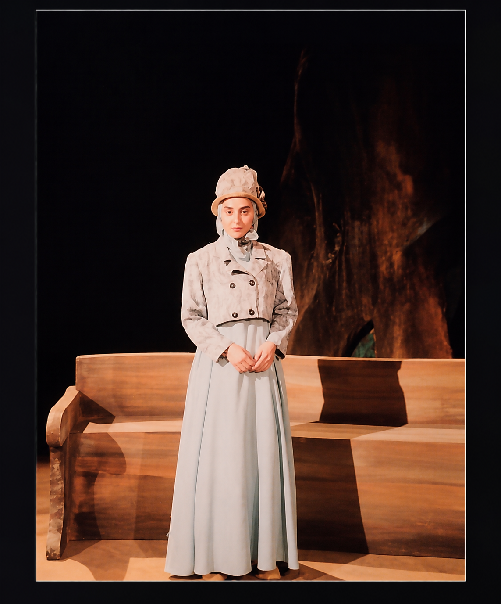
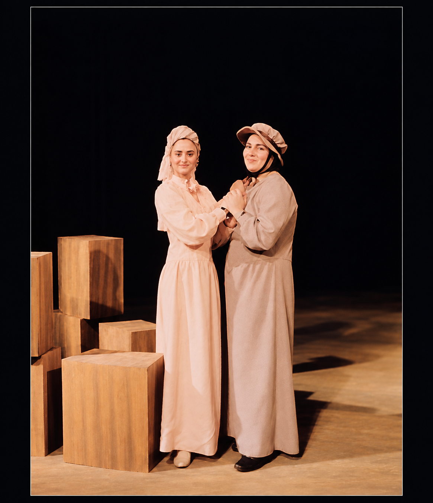

Stage Archive · 1996
The Seagull
مرغ دریاییBy Anton Chekhov
Directed by Akbar Zanjanpour
A surviving record of a stage production from Mina Lakani’s professional career, preserving the work, its principal artists, and the atmosphere surrounding the performance.


Production Record
The Production
- Playwright
- Anton Chekhov
- Director
- Akbar Zanjanpour
- Year
- 1996
- Medium
- Stage Production
- Venue
- Vahdat Hall, Tehranتالار وحدت، تهران
Selected Principal Cast
Voices of the Play
A selected record of principal performers and roles that can be confidently identified for this production.
- Mina Lakaniمینا لاکانیNina Zarechnaya
- Akbar Zanjanpourاکبر زنجانپورBoris Trigorin
- Amin Zendeganiامین زندگانیKonstantin Treplev
Surviving Photographs
From the Stage
Two surviving photographs preserve a small visual record of the production and the quiet moments around it.

One image belongs to the performance itself; the other to the stillness that followed.

This archive is assembled from verified surviving materials. Additional original photographs, documents, or production details can be incorporated as they are confirmed.
← Career Archive